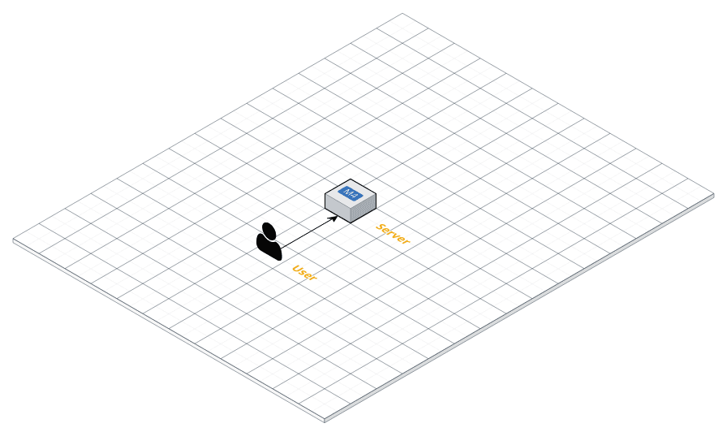

class: center, middle # Intro to Amazon Web Services --- ### A Brief History of Amazon Web Services AWS was born out of a startup struggling to stay on top of massive demand. * In the early 2000s, Amazon was building infrastructure and tools to support Amazon.com. * In 2006, Amazon brought their tools and infrastructure public with EC2. * They were the first company to make a public cloud offering.. * Currently AWS control 35% of the cloud market * AWS offers 98 different products -- [70% of Internet Traffic Goes Through AWS Northern Virginia](http://www.nextgov.com/analytics-data/2016/01/70-percent-global-internet-traffic-goes-through-northern-virginia/124976/) ... --- ## AWS Acronyms **EC2** These are virtualized Linux, Windows, and Mac comupters that you rent from Amazon. * Amazon gives you an IP address and SSH access to the computer. -- **S3** Cloud storage. Imagine a virtual, cloud file system. * Amazon gives you a access to a RESTful API that is used to store pretty much anything you want. -- **RDS** Database. High availability databases in any flavor you like (MySQL, Postgres, Oracle, MariaDB). * Amazon gives you either an internally facing or externally facing IP address to connect to. --- ## Why AWS? You have options: -- * AWS -- * Google Cloud -- * Microsoft Azure -- * DigitalOcean -- * Linode ... hundreds more -- ### People choose because it is the **complete tool** for **highly available** systems. --- ## AWS High Availability AWS has an uptime of **99.95%**. ### **99.95%** uptime is about **4 hours** of downtime a year. -- *4 hours of downtime is not good enough for most companies* -- ###**Redundancy** Reducing the the points of failure by creating failover back up systems. -- * You can achieve even higher uptime by distributing your systems across "Availability Zones". -- * Amazon has 52 Availability Zones across the globe. Each "AZ" is independently powered and cooled. Each has their own networking and security. --- ## AWS: **Complete** Toolset AWS gives you everything that you would normally have in a data center and more: * Easy to configure system access and security (**IAM**) * Fine grained network security (**VPC**) * Auto scaling servers (**Elastic Beanstalk**) * Remote permanent storage (**S3**) -- ### AWS makes it "easy" to build out a resilient cloud application. *(it's a lot of work to build out these tools on your own)* --- ## **AWS** by Example * How does AWS make things easy for the developer? * How does AWS help your systems scale? --- ## **AWS** by Example Single Server Application </img> --- ## **AWS** by Example EC2 Server Simply Overwhelmed </img> --- ## **AWS** by Example ### Single Server Situation As traffic increases, having one server causes problems: * Eventually the server reaches peak utilization and has to be upgraded. * Since the one server is running both the web application and the database (and perhaps more) a performance problem on one system brings down everything. * The single server is a point of failure. If that server goes down, the applciation and all of the data goes with it! --- ## **AWS** by Example ### The **Solution** **RDS** Database * An **RDS** database is simply an specialized EC2 instance that has Postgres, MySQL, Oracle, or MariaDB installed. * An **RDS** databases have a few extra perks. * An **RDS** database has **high availability**. This means that behind the scenes AWS automatically creates multiple copies of your database in different datacenters. If one data center goes down, your database is still up. --- ## **AWS** by Example Server with a separte Database **Warning!** The communication between the web application and the database is not encrypted! </img> --- ## **AWS** by Example ### Cloud Security * Traditional data centers protect data with with physical security and firewalls. * In the cloud, **EVERYTHING** is potentially open to the public. -- ###Solution * VPN networks can encrypt data moving across a group of computers. *OR* * AWS offers a **VPC** Virtual Private Cloud that acts as a data center around your cloud infrastructure. --- ## **AWS** by Example ### Virtual Private Clouds * **VPC**s are logically separated from all other virtual networks on AWS. * **VPC**s create a virtual network on the cloud that is invisible to the rest of the internet. * Since the network is invisibile to the outside world, the data is generally* safe to travel unencryped between devices. --- ## **AWS** by Example EC2 Server with a database in a VPC </img> --- ## **AWS** by Example As the app traffic increases, the load on the server increases. The increased load has also causes sysytem failures resulting in downtime. -- ### Solution Elastic Load Balancers * ELBs distribute traffic across multiple servers. * ELBs are smart. They continuously check on their servers. If a server goes down, it reroutes traffic to other servers in the group. * ELBs are also **High Availability**. Essentially, they will almost never go down. --- ## **AWS** by Example **EC2** Server behind an **ELB** using an **RDS** database within a **VPC** <img src="images/simple_server_with_elb.png"></img> --- ## **AWS** by Example Keep scaling as many **EC2** instances as you need! <img src="images/multiple_servers_in_a_vpc.png"></img> --- ## The Key is the **VPC** **VPC** stands for Virtual Private Cloud. -- The **VPC** is a virtually isolated network i.e. "bubble" on the internet. -- * By default, nothing can enter or your leave your **VPC**. There is zero access to or from the internet. -- * Access to end from the **VPC** is configured through fine grained network **Access Control List**. -- * Inside the **VPC*, subnets can be configured with additional ACLs for even more fine grained control.* -- * The VPC is initialized by providing a **CIDR** block to define the IP space. --- ** Another VPC Diagram ** </img> --- ## A word about **CIDR** Blocks CIDR is a notation used to describe the IP addresses within a network or subnet. -- <br> CIDR addresses are composed of two parts: 1. A template for the IP address `192.168.0.0` 2. A bit mask indicating the range of IP addresses available. `/24` -- Put them together and you have a full CIDR block! `192.168.0.0/24`. -- * The **CIDR** bit mask controls how many IP addresses are allocated to a network or subnet. -- * The **CIDR** template indicates what range of IP addresses you want to use. --- ## CIDR examples -- ### **Primer** - IPv4 address space spans from `0.0.0.0` to `255.255.255.255` * A total of 4,294,967,296 possible IP addresses. -- ``` 192.168.0.0/24 ............. 192.168.0.0 - 192.168.0.255 192.168.0.0/16 ............. 192.168.0.0 - 192.168.255.255 0.0.0.0/8 ............. 0.0.0.0 - 0.255.255.255 0.0.0.0/0 ............. 0.0.0.0 - 255.255.255.255 ``` -- Most of the time ... pick your favoriate IP address range and choose a bit mask of * **24** - 255 Possible IP addresses - small network or subnet * **16** - 65,536 Possible IP addresses - large network or subnet * **0** - 44,294,967,296 Possible IP addresses - VERY large -- **CIDR** bit masks are most likely: 24, 16, 8, 4, 2 ``` 0.0.0.0/0 # selects all IP addresses ```